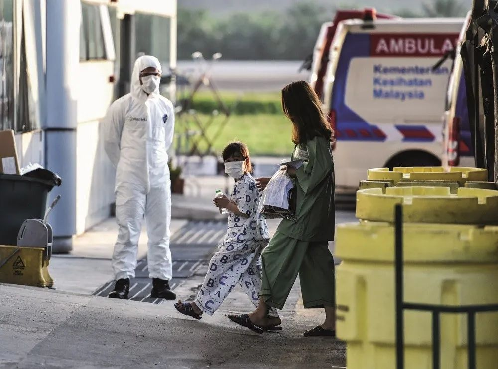
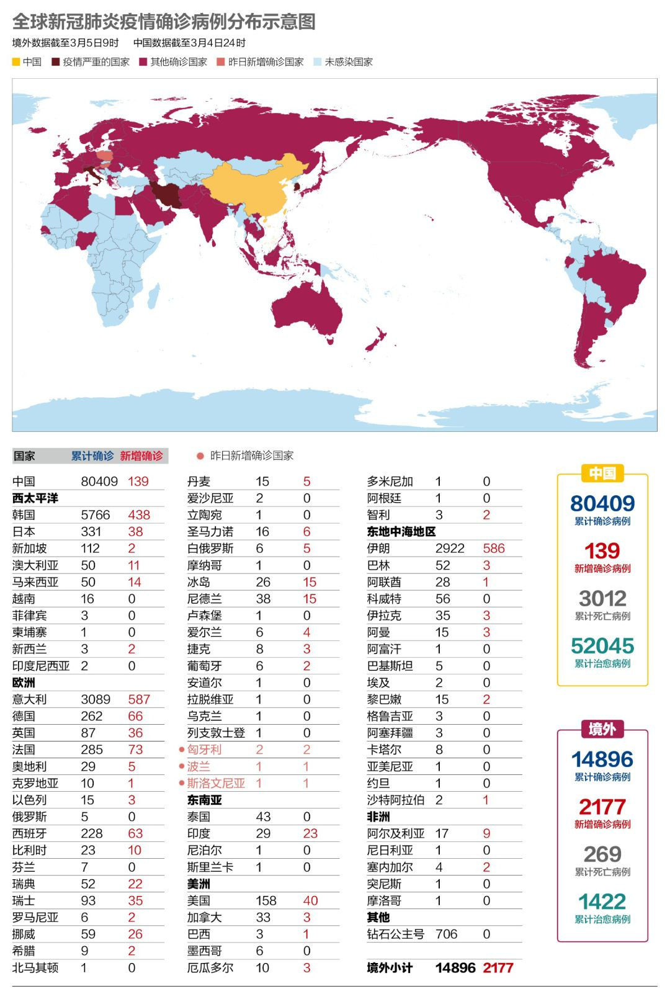
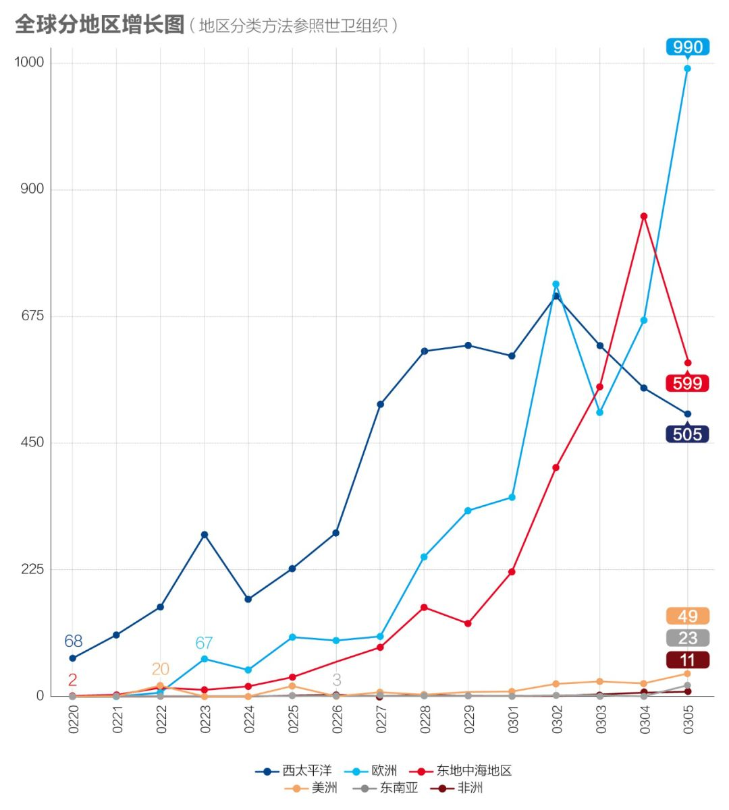
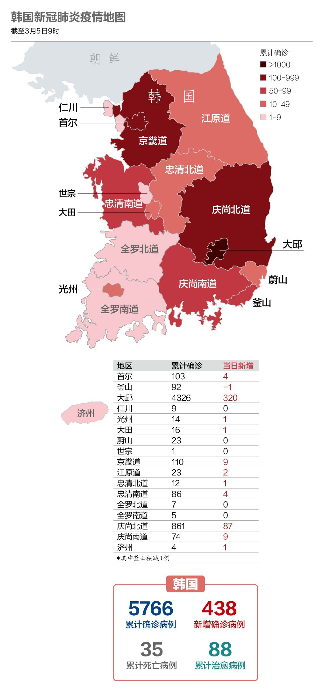
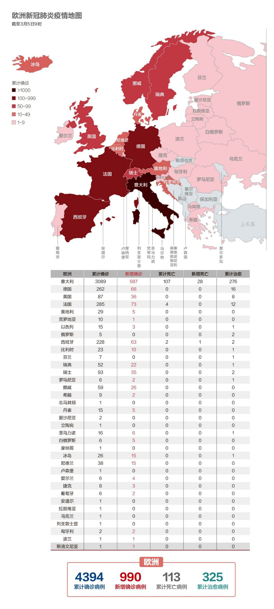
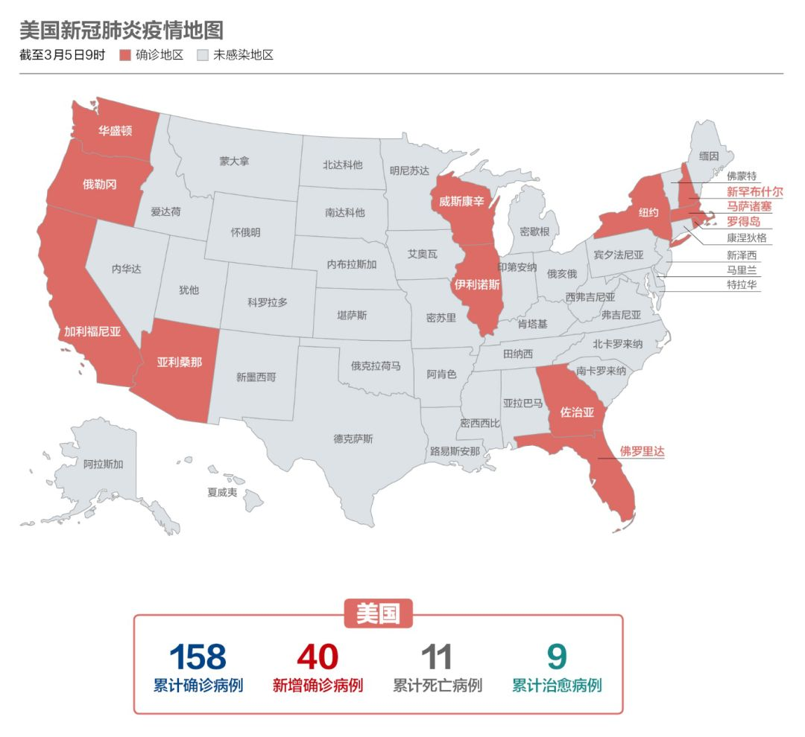

“一切在2月19日之后都变得不一样了”——三个韩国人的疫情感受
原文链接 备份链接 李起元说，这是他人生经历过最严重的事情了。“韩国很小，所以平时新闻也不多。现在发生了这么大的事，电视里新闻都和这个有关了。24小时，全部都是。” 文 | 王仲昀 “是的，一切在2月19日之后都变得不一样了。19日之前， …

武汉已从阻击战转为反击战。欧洲疫情迅速蔓延，单日新增近千

2020年2月26日，在马来西亚雪邦，从武汉撤回的马籍民众抵达当地机场机场。图/ 法新
文 |《财经》数据研究员徐进 图 |《财经》视觉中心
编辑 | 郝洲
一、 武汉战疫在新平台继续拉锯，国内再现输入病例
今日国内简述：国内3月4日报告累计病例80409例，新增139例，低于意大利、伊朗、韩国等国。新增病例131例来自武汉，广大非武汉地区仅8例，其中浙江的2例为境外（意大利）输入。武汉仍保持在三位数，新增疑似病例61例，已经连续5天保持在两位数水平。中央指导组指出，武汉保卫战已从阻击战转为反击战、歼灭战。全国人民都在期待武汉决胜时刻到来。昨日召开的中央政治局常委会要求“加快建立同疫情防控相适应的经济社会运行秩序”，“力争全国经济社会发展早日全面步入正常轨道”，部署七项重要任务11次提到复工复产。证监会以视频审核方式召开鼠年首届发审会，融资功能恢复。上证指数重新站上3000点。
二、 印度首现两位数增长，疫情已蔓延至79国（不含中国）
图1

欧洲又有三国首次确诊感染病例，可能很快欧洲将无一国家能独善其身。印度首次出现两位数增长，主要原因是一个来自意大利的旅行团出现多例确诊，这个旅行团的印度司机后来也被证实感染。
图2

在中国以外，疫情扩散仍然集中在西太平洋（韩国）、欧洲（意大利、德国、法国和西班牙）和东地中海地区（伊朗），欧洲迎来大暴发的一天。随着美国确诊数字的增加，美洲地区的增长也有抬头之势。
图3

小编担心这张图可能很快要扩员了。
三、中韩之间的航班进一步缩减
图4

韩国防疫部门对“新天地”教会有新冠病毒肺炎症状的信徒进行的电询进入尾声。专家表示，除“新天地”教会外，也应警惕其它地区社区感染。截至目前，38个国家和地区对韩国采取全面或限期禁止入境措施，22个国家和地区对从韩国入境者进行隔离，34个国家和地区加大了来自韩国入境者的检疫力度。中国已有不少于15个省市，对来自韩国入境人员采取隔离措施。中外航空公司根据市场需求和疫情形势，减少了部分航班。本周中韩间的航班总量已降至320班，预计下周将进一步减至每周276班。
四、疫情在欧洲全面暴发
图5

由于英国、德国、法国、西班牙、瑞士、挪威、瑞典等国的确诊病例数激增，欧洲单日新增近1000例，由此可判断新冠疫情已经在欧洲全面暴发。意大利国家卫生研究所传染病部门负责人乔瓦尼·雷扎说，预计未来几天确诊病例数还会以较高速度增长。
【特别说明：以上统计，2月28日前为世卫组织官方统计数据，数据截止时间为北京时间每日17时；从2月28日开始，数据由《财经》根据公开资料统计，截止时间为北京时间每日9时】
五、美国各州已做好测试准备
图6

新冠病毒在美国已经出现社区传播，但仍处于早期阶段。加利福尼亚州出现首例死亡。美国副总统彭斯（Mike Pence）3月4日在记者会上宣布：“目前全部州立实验室及州立大学实验室已经准备好，进行新冠肺炎测试。无需联邦政府额外增援设备或资源。经美国食品及药物管理局（FDA）验证，他们已具备资质在各州和地方进行测试。”本周美国全国将发出约150万支（核酸）测试剂。
六、全球疫情数字速览
1、【日检量14000份】武汉移动P3实验室每天上午采集样本，下午1点进行检测，晚上11点前医生就能拿到每位患者的检测报告，一天可做600份核酸检测。除了3套移动P3实验室外，目前武汉市有40家核酸检测机构同时开工，日均检测量可以达到14000份左右，实现了目前武汉核酸检测日清日结。
2、【又1艘邮轮】据美国媒体报道，原定于当地时间3月4日晚抵达旧金山的“大公主号”邮轮已推迟时间，该邮轮上有11名乘客和10名船员出现感染新冠病毒的症状。该游轮上载有约2500名乘客，其中超过50%是加利福尼亚人。
3、【83亿美元抗疫预算】当地时间3月4日，美国国会众议院高票通过一项总金额为83亿美元的应对新冠病毒财政预算，预计国会参议院将在当地时间3月5日审议通过预算后报总统特朗普签字确认。
4、【840万学生停课】当地时间3月4日，意大利教育部长阿佐利纳宣布，新冠疫情发展迅速，决定自5日起关闭全国所有学校直至3月15日。约840万学生将受到影响。此前，只有疫情的部分学校关闭。
5、【缺2600万只口罩】伊朗食品药品组织表示，每周全国需要4千万个口罩，目前正在试图进口N95口罩。据了解，目前伊朗口罩周产约1400万个，每周口罩缺口达2600万只。
小结：武汉保卫战已从阻击战转为反击战、歼灭战。全国人民都在期待武汉决胜时刻到来。欧洲的疫情迅速蔓延，单日新增几近破千。
▼ 点击下图可查看往期“数说疫情”

▲点击图片查看更多疫情报道
责编 | 黄端 duanhuang@caijing.com.cn
本文为《财经》杂志原创文章，未经授权不得转载或建立镜像。如需转载，请在文末留言申请并获取授权。
原文链接 备份链接 李起元说，这是他人生经历过最严重的事情了。“韩国很小，所以平时新闻也不多。现在发生了这么大的事，电视里新闻都和这个有关了。24小时，全部都是。” 文 | 王仲昀 “是的，一切在2月19日之后都变得不一样了。19日之前， …
原文链接 备份链接 国内单日新增病例有望很快落到两位数，全国治愈率跨过60%节点。新冠疫情在海外大部分国家和地区（包括美国）还处于暴发的早期阶段。 文 |《财经》数据研究员徐进 图 |《财经》视觉中心 编辑 | 郝洲 一、 国内多地迎来 …
原文链接 备份链接 根据丁香医生实时数据，截至 3 月 3 日 21:32 时，全国现存确诊病例 29930 例，累计确诊病例 80303 例，现存疑似病例 587 例。其中，重症病例 6806 例，死亡病例 2948 例， …
原文链接 备份链接 非常时期，武汉成了全国人民挂念、祈福的城市。封城后，武汉人民的真实生活是什么样？随着抗“疫”有条不紊的进行，武汉发生了哪些变化？还存在哪些问题？ 正和岛自1月26日起特别推出“叶青专栏”。叶青是一位定居武汉40年的市 …
原文链接 备份链接 从趋势上看，新冠肺炎全球大流行可能无法避免，中国需一边打好国内阻击战，一边应对全球疫情带来的新风险。 文 | 信娜 朱贺 编辑 | 王小 空格 鉴于中国境外受新型冠状病毒疫情影响的国家和病例数量持续增加，2月28日，世 …